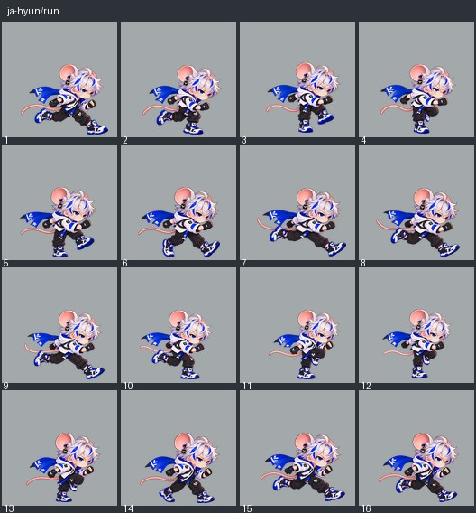
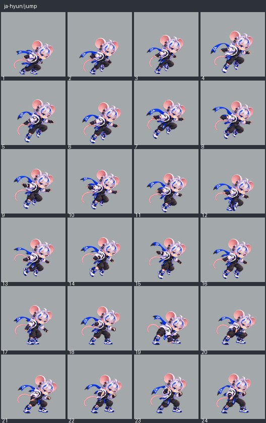
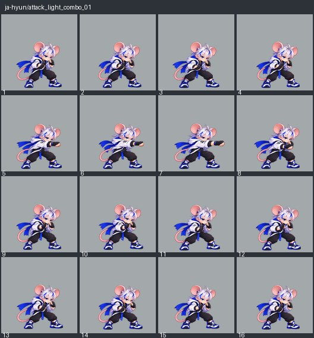
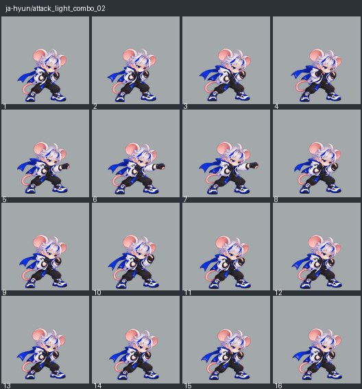
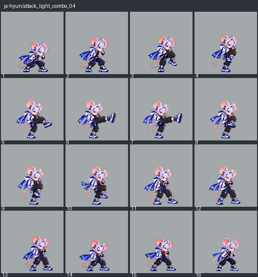
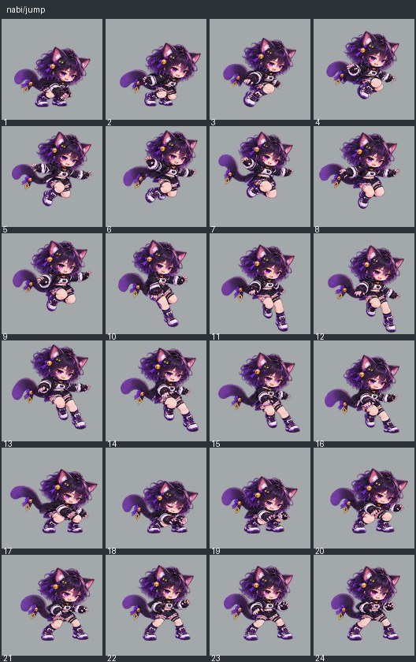
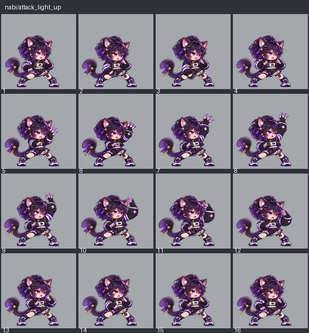
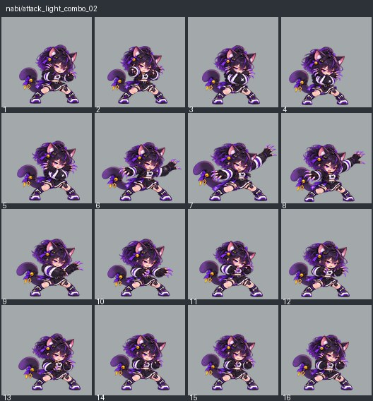

전진 달리기. 발 교대와 체중 이동이 이어지고 루프가 튀지 않는다.

달리기·점프·약공격의 연결을 검토한 대표 10종 영상입니다. 승인 당시의 후보 재생을 보존합니다. 등록 상태와 남은 26종의 진행 내용은 아래에 표시합니다.
실제 경기 영상은 제품의 전투·지형·카메라·표시 코드를 사용합니다. 촬영 중 OS 포커스 일시정지만 제외했습니다. Android 기기 중단·복귀 검사 결과가 아닙니다.
영상의 전체 화면 버튼으로 크게 볼 수 있습니다. 자세 연결은 정상 속도와 느린 속도에서 함께 확인합니다.
2026-10-23: 대표 10종 사용자 승인·게임 자산 등록 완료. 설치 후 독립 QA. 남은 26종은 제작 중이며 아직 승인·등록되지 않았습니다.
아래는 각 그림의 자세·순서를 보는 자료입니다. 실제 크기·접지와 연결은 위 경기 영상에서 확인합니다. 별도 타임라인 페이지의 캔버스는 그림 선택과 시간 확인용이며 몸 크기·발 위치 보정을 재현하지 않습니다.
전진 달리기. 발 교대와 체중 이동이 이어지고 루프가 튀지 않는다.

상승·정점·하강을 구분한다. 실제 착지 전에는 지면을 딛는 착지 자세를 보이지 않는다.

왼손 전방 펀치. 지상 약1과 약3은 같은 손이다. 준비→전방 단타→회복.

반대 오른손 전방 펀치. 왼손 첫타와 사용 손을 구분한다.

한 발로 버티고 다른 발을 전방으로 펼치는 강한 킥. 목도리 공격이 아닌 약4 다운 마무리.

전진 달리기. 발 교대와 체중 이동이 이어지고 루프가 튀지 않는다.
상승·정점·하강을 구분한다. 실제 착지 전에는 지면을 딛는 착지 자세를 보이지 않는다.

왼손으로 전방 할퀴기. 첫 약공격 준비→앞으로 단타→회복.

오른손을 아래에서 위로 할퀴는 지상 약2. 반대손은 방어하고 양손X나점프어퍼와구별한다.

두 손을 교차한 뒤 양쪽으로 벌려 X자 할퀴는 약3 다운 마무리.

후보 목록 SHA-256: 5852dd4e468f5d0b8a349cb9d413b9d211ce8b9b5cc72a1a69ea8df9c5609941
대표 10종 승인·등록 완료 · 피해·공격 시간·60Hz 전투 계산 변경 없음 · Android 기기 검사 미실행